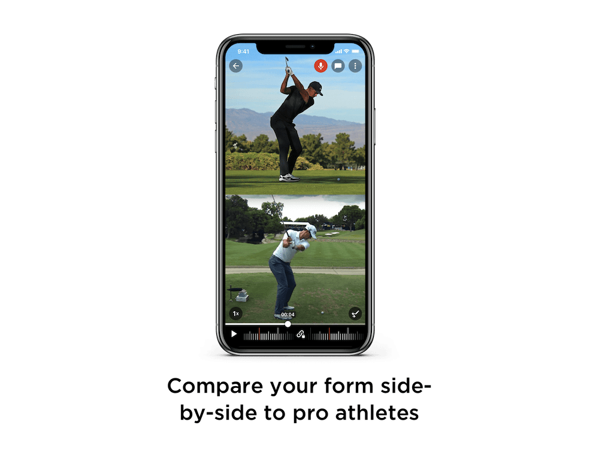
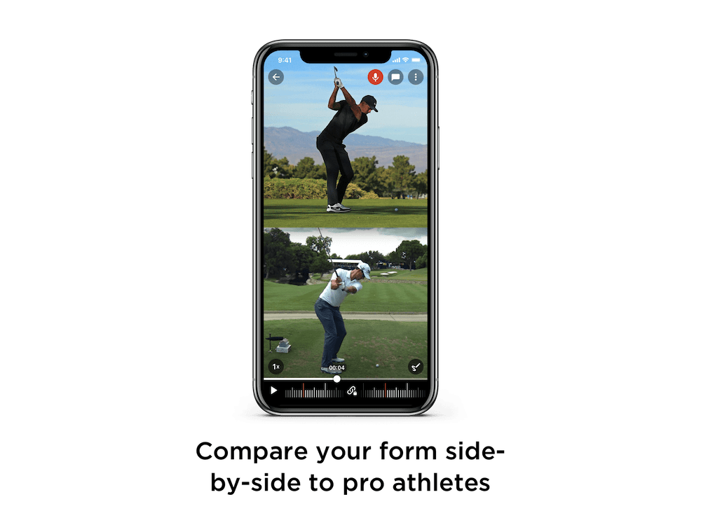
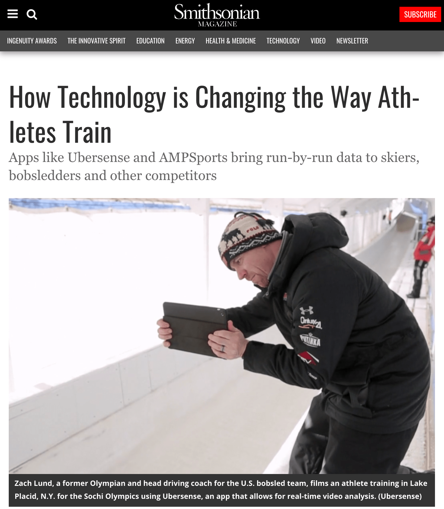

Slow motion video analysis
I led the design for Ubersense, an iOS and Android app that lets athletes record themselves in slow motion and use analysis tools to help them improve.
* Acquired by Hudl in 2014
Product Design iOS & Android Sports Tech
I led the design for Ubersense, an iOS and Android app that lets athletes record themselves in slow motion and use analysis tools to help them improve.
* Acquired by Hudl in 2014
Product Design iOS & Android Sports Tech
Ubersense was a startup that democratized slow-motion video for coaches and athletes around the world. Whereas in the past, coaches had to purchase dedicated slow-motion video cameras to analyze their athletes' technique, Ubersense leveraged the high-frame rate cameras in iPhone and Android phones to allow anyone with a mobile device to analyze their technique the way that pros do.
The iOS and Android apps have been downloaded over 4 million times and used by the US Olympic Bobsled team. Ubersense was acquired by Hudl in 2014.
I joined Ubersense (then, a team of 7) in 2013 as a front-end developer and quickly took on the role of leading iOS and Android design. Since Ubersense was a small startup, I got take on significant responsibility and own the design process for many features from end-to-end.
My responsibilities included:
Because Ubersense allowed users to analyze their technique in slow-motion, it was especially popular for sports that require high finesse, such as tennis, golf, baseball.
In order to understand users better, I interviewed different types of coaches: I took several lessons from golf coaches to understand how they use video analysis, I reached out to power users, and I met with and observed coaches at training centers.
Customer feedback showed that users organized their videos in three primary ways:
I proposed the solutions:
During a lesson, a coach may want use video to show an athlete where they should specifically improve. The coach may verbally communicate these points during a lesson but may want to follow up afterwards so that the athlete can remember them better.
There were several improvements made to enhance communication:
 

Customer feedback showed that users organized their videos in two ways:
This prototype was created to test the experience of using the slow-motion scrubber on the web. The key challenge I found was that at that time, iOS videos had a consistent frame rate, but since there are so many different types of Android devices, the frame rate that cameras could capture was too varied. Because the experience couldn't be replicated at a high-enough standard, this prototype showed that it was to early to allow users to scrub videos consistently on the web.
Since Ubersense was built iteratively, it took a while for us to nail down the information architecture. We revised the hierarchy a number of times to ensure that the most important features were accessible to most use cases.
In 2013, the US Bobsled team used Ubersense to train for the 2014 Sochi Winter Olympics. The Ubersene team visited the US Bobsled team at their training center in Lake Placid, N.Y.
In 2014, Ubersense was acquired by Hudl.
© Kevin Chang, All Rights Reserved